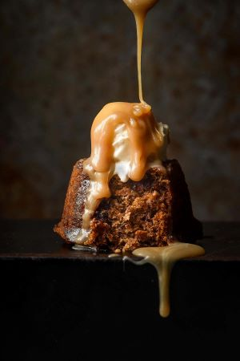

An ultra moist, brown sugar cake doused in rich butterscotch sauce, our classic sticky date pudding recipe os what comfort food eating is all about
Prehead oven to 180c. Grease and line the base of a 7cm deep, 22cm base cake pan
Place dates and bicarbonate soda into a bowl over boiling water. Allow to stand for 20 minutes
Using an electric mixer, beat butter, suar and vanilla until pale and creamy. Add eggs 1 at a time, beating well after each addition. Using a large metal spoon, fold through date mixture and flour until well combined.
Spoon mixture into prepared cake pan. Bake for 35 to 40 minutes or until a skewer inserted into the center comes out clean. Turn onto plate
Make sauce: combine all sauce ingredients in a saucepan over medium heat. Cook, stirring iften, until sauce comes to a boil. Reduce heat to medium low. Simmer for 2 minutes
Piere pudding all over with a skewer. Pour 1/2 cup of warm sauce over the warm pudding. Stand for 10 minutes. Cut into wedges. Serve with remaining sauce
Toffee pudding is the term used in the US for what we refer to as sticky date pudding. Their version may or may not contain dates, which seems a shame as when they break down, they add an even extra sweet caramel flavour as well as adding moisture to the pudding.
Leftover pudding should be transferred to an airtight container and frozen for up to two months. Make sure you freeze the cake and the sauce separately. Thaw in the fridge overnight and warm in the microwave or warm the cake in the oven and the sauce in a saucepan over medium heat, stirring occasionally.
Because this cake is so moist and tender and laden with sugar it stays fresh for up to a week. Store in an airtight container in the fridge. Once reheated, it’s like it’s fresh from the oven.